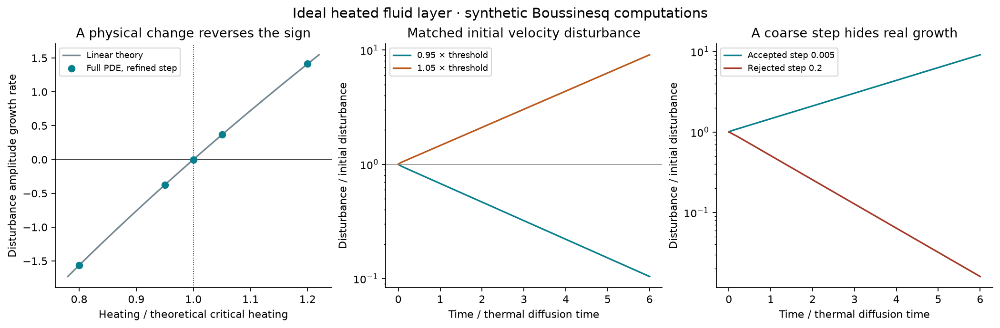
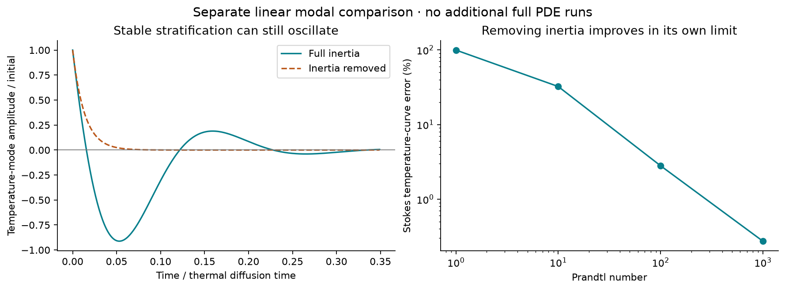

Expanded dynamics study · Methods, reproduction and limits
Can heating turn decay into growth?
Yes—in this bounded fluid model.
At 5% below the theoretical heating threshold, the disturbance fell to 10.42% of its starting size. At 5% above, it grew to 9.08 times its starting size over the same six model time units.
A physical change reverses the outcome

These are synthetic Boussinesq simulations of a heated layer with ideal stress-free plates. They reproduce a classical instability, rather than identify a new law or a transition in the project's existing unforced fluid runs.
| Heating / critical heating | Measured amplitude growth rate | Final / initial amplitude |
|---|---|---|
| 0.80 | -1.562945 | 8.0127e-05× |
| 0.95 | -0.374859 | 0.10415× |
| 1.00 | -0.000003 | 0.99998× |
| 1.05 | +0.365592 | 9.0777× |
| 1.20 | +1.413003 | 5037.4× |
The critical Rayleigh number is 657.511364 for these boundary conditions. Real ponds need different boundaries, physical properties and forcing measurements.
Validation changed which runs we accepted
79 PDE runs and 12 separate modal comparisons completed. Final checks: 20/20; independent tests: 15/15. Grids, time steps, seed amplitude, absolute thermal perturbation, zero disturbance and buoyancy removal were tested.
The initial step missed the energy-budget limit despite getting the growth sign right. Halving it brought the maximum refined residual to 0.01018%. The coarser failures remain recorded. Four seeded starts agree closely because they approach the same linear mode; their tiny statistical intervals do not quantify real-world uncertainty.
An earlier wall-enforcement error produced false growth. Those runs were rejected, the boundary projection was corrected, and a regression test was added before rerunning the full matrix. Failure record.
Oscillation is a separate question

A stably stratified fluid mode can oscillate while decaying. Removing inertia erased those oscillations in the Pr=1 comparison. The approximation improved at large Prandtl number. Agreement about stability alone did not guarantee agreement about motion.
What this establishes—and what remains open
Maintained heating can supply energy that amplifies a small fluid disturbance. This is a concrete example supporting the mechanism you asked about. It does not establish equivalent feedback in the existing dynamic-q fit or show that footsteps trigger this instability in a pond. No microbial response, global branch selection, long-time turbulent state or Navier–Stokes smoothness result was tested.
Read the complete study for equations, controls, uncertainty, source links and raw-data definitions. Classical convection theory · Inertia-free limiting theory.